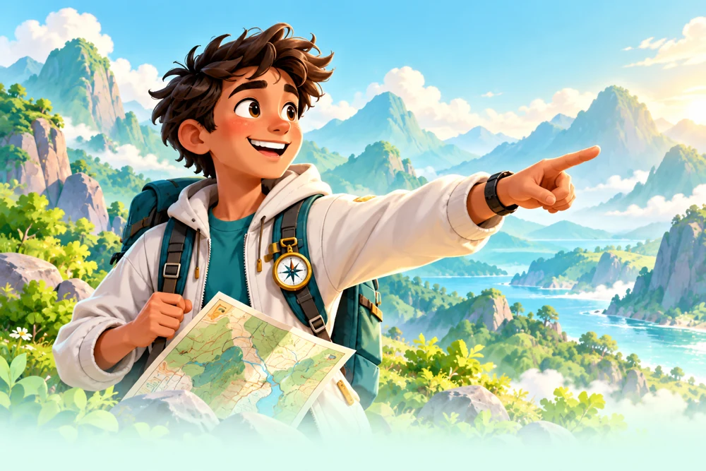

Your nextdiscovery awaits!
STUDENT
Body Explorer
Play missions, follow your curiosity
and unlock amazing discoveries.
Choose your mission role and let’s explore!
Same body.
Bigger adventures!

Your nextPlay missions, follow your curiosity
and unlock amazing discoveries.
Guide your explorers
and celebrate their progress.
Your account. Your explorer. Your next discovery.